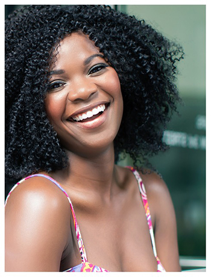

About Me
After several years working in HR, I decided to pursue my passion for coding and made the switch to software engineering. I've since developed a strong skill set in several programming languages, including Ruby, JavaScript, and Java, which I use to design and implement effective and user-friendly software solutions. I'm passionate about staying up-to-date with the latest trends and technologies in the industry, and I'm always seeking new challenges to help me grow and improve as a software engineer.
Thank you for taking the time to check out my portfolio, and please feel free to contact me with any questions or opportunities!